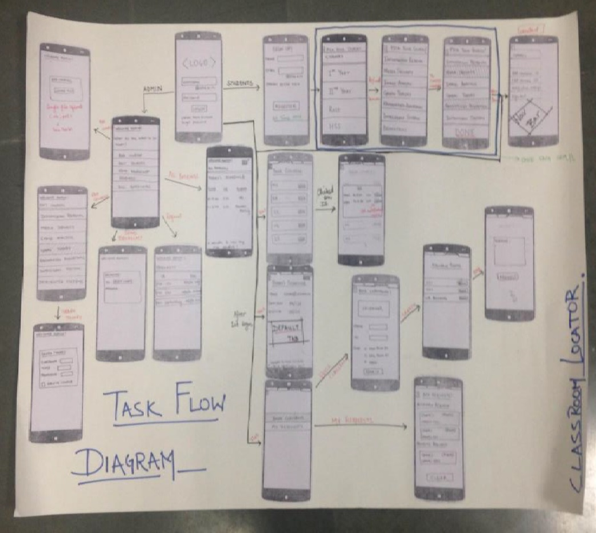
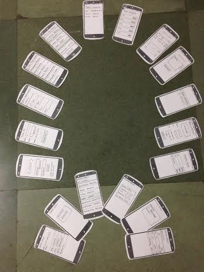

At IIIT-Delhi students are given the option to choose from a long list of elective courses. The difficulty to interpret and even memorize time-tables with various courses and different venues for lectures on different days created confusion for most students. Multiple bookings of the same classroom for student activities at the same time also make it harder to coordinate and organize meetings for the different clubs at the institute.
Identifying this inconvenience, we decided to come up with an application that could push reminders for subscribed lectures. It can also resolve conflicts by eliminating the otherwise manual process of noting down bookings and only suggests available classrooms for activities based on audience size and purpose.
 Task flow diagram of the application
We spent a lot of time prototyping and understanding how the application and its experience was perceived by potential users, while I hacked on the application overnight. The result was a simple, clean and easy to navigate application which rightly served the purpose it was intended for. The application was showcased on Building Better Interfaces 2014 (BBI) @ IIIT-Delhi.
 Low fidelitiy prototyles of the application